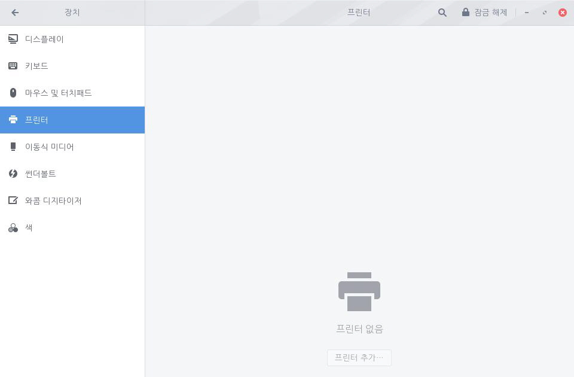
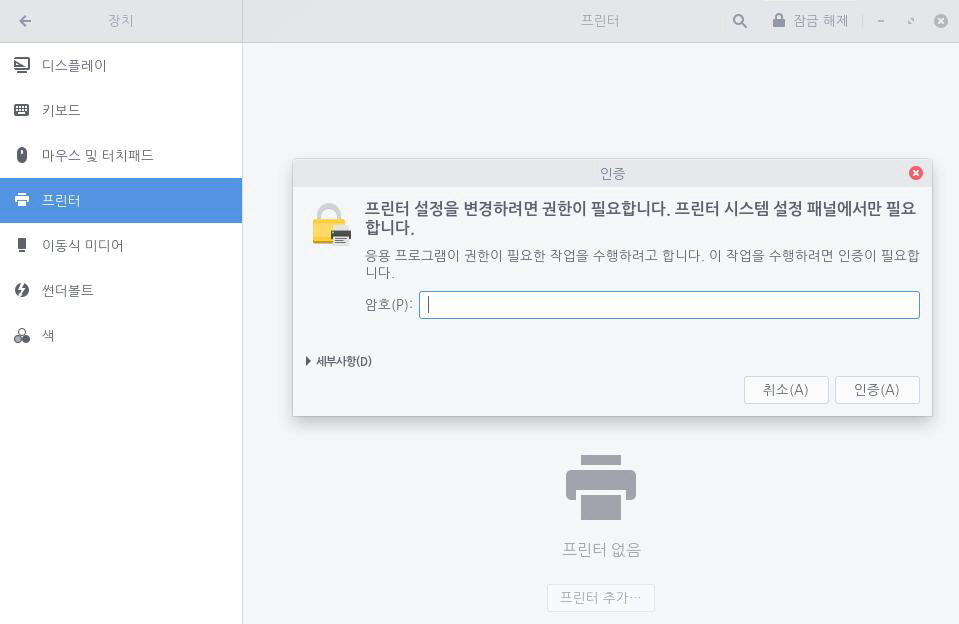
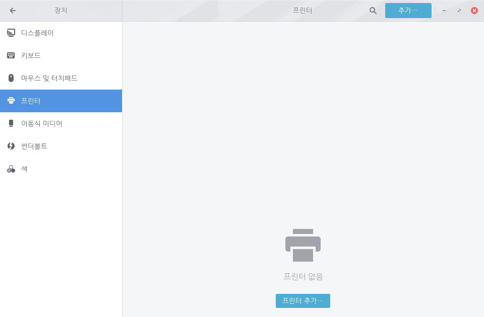
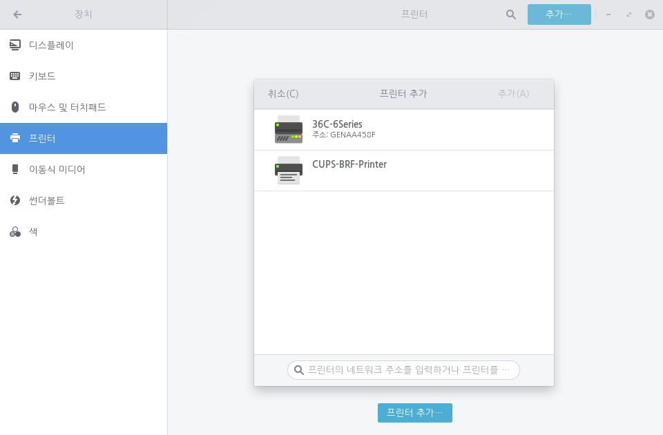

사용자의 시스템에서는 연결된 모든 프린터를 인식할 수 있습니다. 대부분의 프린터는 USB 케이블로 컴퓨터와 연결되어 있지만 일부 프린터는 유선 혹은 와이파이로 연결되어 있습니다. 프린터가 USB 케이블로 연결된 경우 시스템에서 자동으로 드라이브를 설치하고 프린터를 설정합니다. 이 때 사용자 인증을 요구할 수 있습니다. 프린터 설치가 끝나면 완료 메시지가 나타납니다. 프린터가 네트워크에 연결된 경우 자동으로 설정되지 않기 때문에 사용자가 직접 프린터를 설정해야 합니다. 다음 단계를 수행하여 로컬 프린터를 설정합니다.1. 좌측 하단의 [시작]아이콘을 클릭하고 검색 창에 "설정"을 입력한 후 [설정] 애플리케이션을 실행합니다.
 2. [설정] 애플리케이션 사이드 바에서 [장치]를 클릭하고 [프린터]를 클릭합니다.
2. [설정] 애플리케이션 사이드 바에서 [장치]를 클릭하고 [프린터]를 클릭합니다.
3. 프린터를 추가 또는 제거하기 전에 오른쪽 상단의 [잠금 해제] 단추를 클릭하여 사용자 인증을 수행합니다.4. 사용자 인증이 완료되면 오른쪽 상단의 [추가] 혹은 프린터 그림 아래의 [프린터 추가]를 클릭한 다음 원하는 프린터를 추가합니다.
 원하는 프린터가 표시되지 않는 경우 프린터 드라이버를 설치해야 합니다. 프린터를 설치한 한 다음 원하는 경우 기본 프린터를 설정할 수 있습니다.